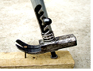
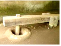

2015年北京市中考物理试题 · 选择题 第6、7、8、9、10题
6．（2分）在下列实例中，用做功的方式来改变物体内能的是（ ）
A．用热水袋暖手，手的温度升高
B．将冰块放入饮料中，饮料的温度降低
C．在炉子上烧水，水的温度升高
D．用手反复弯折铁丝，弯折处铁丝的温度升高
7．（2分）下列说法中正确的是（ ）
A．电饭锅工作时，将内能转化为电能
B．电风扇工作时，将机械能转化为电能
C．干电池给灯泡供电时，将电能转化为化学能
D．在阳光照射时，太阳能电池将太阳能转化为电能
8．（2分）估测在实际生活中的应用十分广泛，下列所估测的数据中最接近实际的是（ ）
A．一个鸡蛋的质量约为500g
B．普通家庭房间门的高度一般大于3m
C．教室中使用的普通日光灯管的长度约为2m
D．完整播放一遍中华人民共和国国歌所需的时间约为50s
9．（2分）下列选项中符合安全用电要求的是（ ）
A．用湿手拨动空气开关
B．电线的绝缘皮破损时应及时更换
C．在未断开电源开关的情况下更换灯泡
D．把用电器的三脚插头改为两脚插头接在两孔插座上使用
10．（2分）如图所示的四种情景中，所使用的杠杆属于省力杠杆的是（ ）
A． 筷子B． 钓鱼竿
C．

羊角锤D．
古代捣谷工具